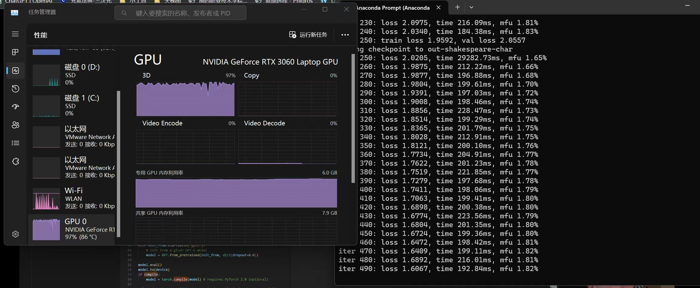
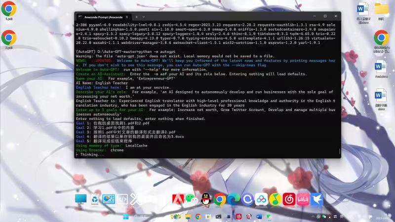
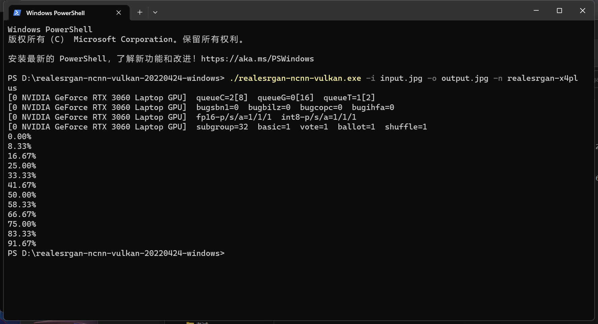

普通人如何实现阶级跃迁，我认为掌握人工智能技术已经不再是科技专家的专属领域，对于普通人来说同样是一条通向财富和机会的道路。
NanoGPT是一个用于对中等规模的生成式预训练Transformer（GPT）进行训练和调优的框架。其作者Andrej Karpathy基于注意力机制和OpenAI的GPT-3两篇论文的理论，使用PyTorch从零开始构建一个GPT。NanoGPT代码简单易读，2个仅300行代码的文件。现已基于OpenWebText重现GPT-2(124M)，在单个8XA100 40GB节点上，训练时间为38小时
NanoGPT是karpathy/nanoGPT这个GitHub仓库中的一个项目，是一个用于训练/微调中等规模GPT的最简单、最快速的存储库。它是minGPT的重写，优先考虑牙齿而不是教育。目前，train.py文件可以在OpenWebText上重现GPT-2(124M)，在单个8XA100 40GB节点上运行，大约需要4天的训练时间
我在我的电脑上部署了NanoGPT，并且尝试用Nvidia GeForce RTX3060移动版进行训练，虽然显存相对于桌面版的RTX3060来说，只有一半，也就是6G显存，但是CUDA核心却超过了桌面版的RTX3060
我以莎士比亚语录进行训练，训练了七百余轮次，loss收敛到1.45左右

最后运行的效果其实还不错。
接下来我又尝试了AutoGPT，根据项目的介绍，AutoGPT是一个开源应用程序，它使用OpenAI的大型语言模型GPT-4来自动执行多步骤项目，如果您直接使用GPT-4，这些项目将需要来回提示。AutoGPT的自主功能是指无需用户不断提示即可工作的能力。这意味着AutoGPT可以独立行动并快速产生想法和项目。AutoGPT基于GPT-4，可以从自己的经验和反馈中学习，以随着时间的推移提高其性能。它可以创建长期业务计划和模型并在没有任何人为干预的情况下自动执行多步骤项目
我配置了GPT3.5的Api，然后设定了一些任务

虽然原理十分复杂，但实际运行的效果不如人意，运行了很久，都没有实质性的进展（也许应该用GPT4的Api，但是过于昂贵）
随后，我在本地部署了novelai，也就是stable diffusion，下载了许多模型（包括Lora）模型，试画了一些图，效果十分惊艳
Stable Diffusion是一种深度学习文本到图像生成模型，它主要用于根据文本的描述产生详细图像，尽管它也可以应用于其他任务，如内补绘制、外补绘制，以及在提示词（英语）指导下产生图生图的翻译。Stable Diffusion是基于Latent Diffusion Models（潜在扩散模型，LDMs）的文图生成（text-to-image）模型。具体来说，得益于Stability AI的计算资源支持和LAION的数据资源支持，Stable Diffusion在LAION-5B的一个子集上训练了一个Latent Diffusion Models，该模型专门用于文图生成
下面是两张效果图
由于显卡显存和算力不足，所以生成的分辨率较低，于是我用Real-Esrgan（超分辨率重建）算法，对图像进行超分还原，分辨率可以达到原来的4倍
